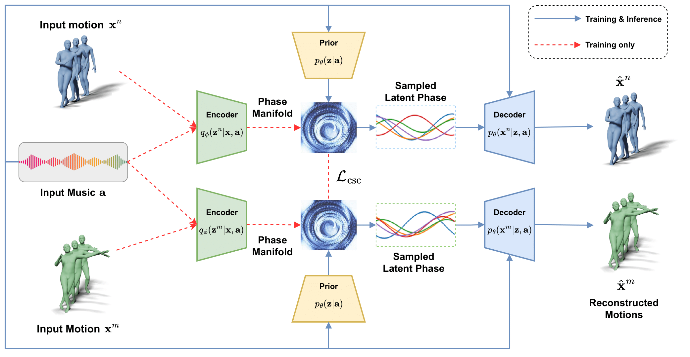

Method
In this paper, our goal is to develop a scalable technique for group dance generation, a phase-based variational generative model for scalable group dance generation, namely Phase-conditioned Dance VAE (PDVAE). To our knowledge, PDVAE is the first method to represent the variational latent space using phase parameters in the frequency domain of the motion curves. Our method goes beyond the conventional VAE approach that typically relies on a single latent vector drawn from a Gaussian distribution, which is unable to adequately represent the temporal information of the motion sequence (e.g., the time dimension is squeezed out).
